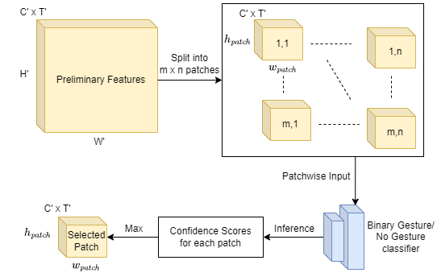
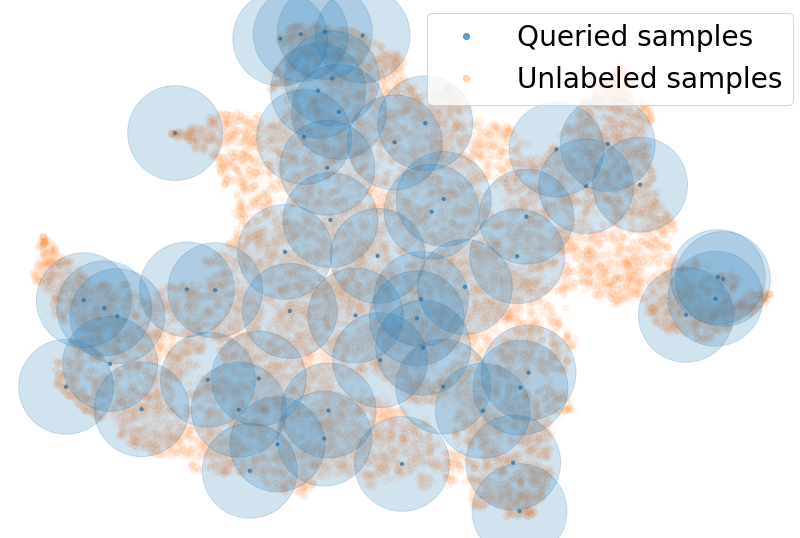
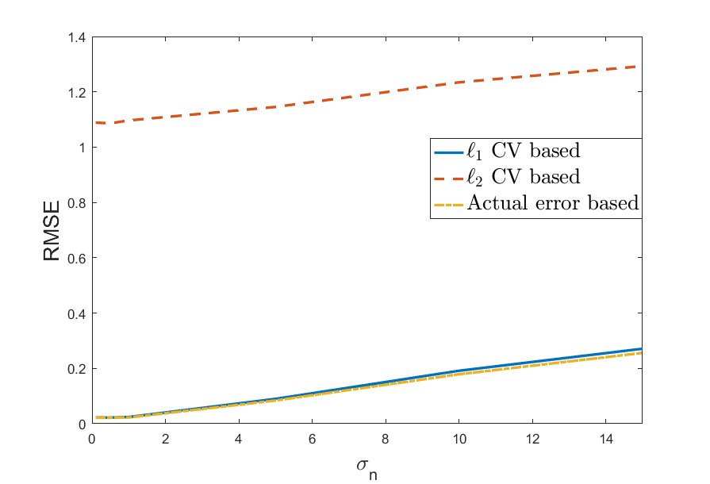
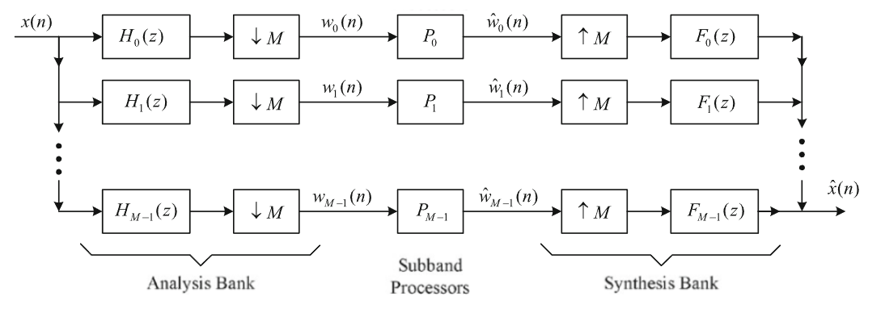
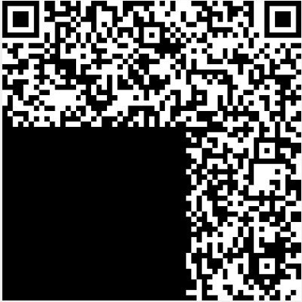
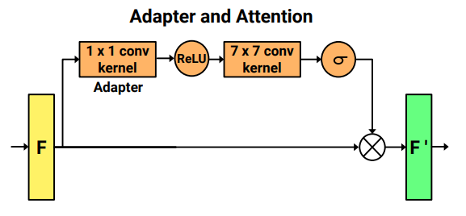

|

|
Long-Distance Gesture Recognition using Dynamic Neural Networks
Shubhang Bhatnagar, Sharath Gopal, Narendra Ahuja, Liu Ren
International Conference on Intelligent Robots and Systems (IROS) , 2023
abstract /
project page /
arxiv
Gestures form an important medium of communication between humans and machines. An overwhelming
majority of existing gesture recognition methods are tailored to
a scenario where humans and machines are located very close
to each other. This short-distance assumption does not hold
true for several types of interactions, for example gesture-based
interactions with a floor cleaning robot or with a drone. Methods
made for short-distance recognition are unable to perform
well on long-distance recognition due to gestures occupying
only a small portion of the input data. Their performance is
especially worse in resource constrained settings where they
are not able to effectively focus their limited compute on the
gesturing subject. We propose a novel, accurate and efficient
method for the recognition of gestures from longer distances. It
uses a dynamic neural network to select features from gesturecontaining
spatial regions of the input sensor data for further
processing. This helps the network focus on features important
for gesture recognition while discarding background features
early on, thus making it more compute efficient compared
to other techniques. We demonstrate the performance of our
method on the LD-ConGR long-distance dataset where it
outperforms previous state-of-the-art methods on recognition
accuracy and compute efficiency.
|
|

|
PAL: Pretext based Active Learning
Shubhang Bhatnagar, Sachin Goyal*, Darshan Tank*, Amit Sethi
British Machine Vision Conference (BMVC), 2021
abstract /
project page /
paper /
code
The goal of pool-based active learning is to judiciously select a fixed-sized subset of
unlabeled samples from a pool to query an oracle for their labels, in order to maximize
the accuracy of a supervised learner. However, the unsaid requirement that the oracle
should always assign correct labels is unreasonable for most situations. We propose an
active learning technique for deep neural networks that is more robust to mislabeling than
the previously proposed techniques. Previous techniques rely on the task network itself
to estimate the novelty of the unlabeled samples, but learning the task (generalization)
and selecting samples (out-of-distribution detection) can be conflicting goals. We use
a separate network to score the unlabeled samples for selection. The scoring network
relies on self-supervision for modeling the distribution of the labeled samples to reduce
the dependency on potentially noisy labels. To counter the paucity of data, we also deploy
another head on the scoring network for regularization via multi-task learning and use an
unusual self-balancing hybrid scoring function. Furthermore, we divide each query into
sub-queries before labeling to ensure that the query has diverse samples. In addition to
having a higher tolerance to mislabeling of samples by the oracle, the resultant technique
also produces competitive accuracy in the absence of label noise. The technique also
handles the introduction of new classes on-the-fly well by temporarily increasing the
sampling rate of these classes. We make our code publicly available at https://
github.com/shubhangb97/PAL_pretext_based_active_learning
|

|
Analyzing Cross Validation in Compressed Sensing with Mixed Gaussian and Impulse Measurement Noise with L1 Errors
Shubhang Bhatnagar*, Chinmay Gurjarpadhye*, Ajit Rajwade
European Signal Processing Conference (EUSIPCO),
abstract /
paper /
extended arxiv
Compressed sensing (CS) involves sampling
signals at rates less than their Nyquist rates and attempting to reconstruct them after sample acquisition.
Most such algorithms have parameters, for example the regularization parameter in LASSO, which need to be chosen carefully for optimal
performance. These parameters can be chosen based on assumptions on the noise level or signal sparsity, but this knowledge may often be
unavailable. In such cases, cross validation (CV) can be used to choose these parameters in a purely data-driven fashion. Previous work
analyzing the use of CV in CS has been based on the ℓ2 cross-validation error with Gaussian measurement noise. But it is well known that the ℓ2
error is not robust to impulse noise and provides a poor estimate of the recovery error, failing to choose the best parameter. Here we propose
using the ℓ1−CV error which provides substantial performance benefits given impulse measurement noise. Most importantly, we provide a detailed
theoretical analysis and error bounds for the use of ℓ1−CV error in CS reconstruction. We show that with high probability, choosing the parameter
that yields the minimum ℓ1−CV error is equivalent to choosing the minimum recovery error (which is not observable in practice). To our best
knowledge, this is the first paper which theoretically analyzes ℓ1 -based CV in CS.
|

|
Insights on coding gain and its properties for principal component filter banks
Prasad Chaphekar, Aniket Bhatia,Shubhang Bhatnagar, Abhiraj Kanse, Ashish V Vanmali, Vikram M Gadre
Sādhanā , Journal of the Indian Academy of Sciences, 2023
abstract /
paper
Principal Component Filter Bank (PCFB) is considered optimal in terms of coding gain for specificconditions.
P P Vaidyanathan stated that coding gain does not necessarily always increase with the increase inthe number of bands. However, very few attempts are made
in the literature to go beyond the confines of work done by P P Vaidyanathan. We present analytic proofs for the monotonicity of specific shapes of PSDs.
This papers also derives properties of coding gain of PCFBs, which brings the new insights on the coding gain of Principal Component Filter Banks.
|

|
QR Code Denoising using Parallel Hopfield Networks
Shubhang Bhatnagar*, Ishan Bhatnagar*
Arxiv , 2018
abstract /
arxiv
We propose a novel algorithm for using Hopfield
networks to denoise QR codes. Hopfield networks have mostly been
used as a noise tolerant memory or to solve difficult combinatorial
problems. One of the major drawbacks in their use in noise tolerant
associative memory is their low capacity of storage, scaling only
linearly with the number of nodes in the network. A larger capacity
therefore requires a larger number of nodes, thereby reducing the
speed of convergence of the network in addition to increasing
hardware costs for acquiring more precise data to be fed to a larger
number of nodes. Our paper proposes a new algorithm to allow the
use of several Hopfield networks in parallel thereby increasing the
cumulative storage capacity of the system many times as compared
to a single Hopfield network. Our algorithm would also be much
faster than a larger single Hopfield network with the same total
capacity. This enables their use in applications like denoising QR
codes, which we have demonstrated in our paper. We then test our
network on a large set of QR code images with different types of
noise and demonstrate that such a system of Hopfield networks can
be used to denoise and recognize QR codes in real time.
|

|
Memory Efficient Adaptive Attention For Multiple Domain Learning
Himanshu Pradeep Aswani, Abhiraj Sunil Kanse, Shubhang Bhatnagar, Amit Sethi
Arxiv , 2021
abstract /
arxiv
We propose a novel algorithm for using Hopfield
networks to denoise QR codes. Hopfield networks have mostly been
used as a noise tolerant memory or to solve difficult combinatorial
problems. One of the major drawbacks in their use in noise tolerant
associative memory is their low capacity of storage, scaling only
linearly with the number of nodes in the network. A larger capacity
therefore requires a larger number of nodes, thereby reducing the
speed of convergence of the network in addition to increasing
hardware costs for acquiring more precise data to be fed to a larger
number of nodes. Our paper proposes a new algorithm to allow the
use of several Hopfield networks in parallel thereby increasing the
cumulative storage capacity of the system many times as compared
to a single Hopfield network. Our algorithm would also be much
faster than a larger single Hopfield network with the same total
capacity. This enables their use in applications like denoising QR
codes, which we have demonstrated in our paper. We then test our
network on a large set of QR code images with different types of
noise and demonstrate that such a system of Hopfield networks can
be used to denoise and recognize QR codes in real time.
|